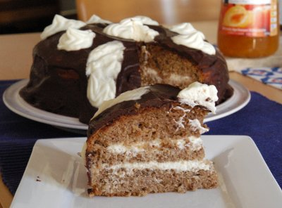

| Zutaten: | |
| 150 g | Butter |
| 150 g | Zucker |
| 1 Pck | Vanillinzucker |
| 6 | Eigelb |
| 2 TL | Backpulver |
| 150 g | Mehl |
| 150 g | Mandeln gerieben |
| 150 g | Schokoladenpulver |
| 6 | Eiweiss |
| 2.5 dl | Vollrahm |
| 1 Pck | Rahmhalter |
| 3 EL | Puderzucker |
| 50 g | Aprikosenkonfitüre |
| 200 g | Schokolade |
| 2 dl | Halbrahm |
Butter mit dem Zucker nach und nach schaumig rühren.
Eier trennen. Eigelb in die Rührschüssel zum Zucker-Butter Gemisch geben. Eiweiss in den Schlag-Becher füllen.
Backpulver, Vanillinzucker, Mehl mischen und sieben, und zusammen mit Schokoladenpulver und Mandeln unterrühren.
Eiweiss steif schlagen und darunter heben.
In eine vorbereitete Springform füllen, bei 170 - 180°C im unteren Ofendrittel ca. 45 Minuten backen.
Die erkaltete Torte 2 Mal durchschneiden.
2.5 dl Vollrahm mit Rahmhalter und Puderzucker steif schlagen. Den Schlagrahm zwischen den 3 Böden verteilen.
Aprikosenkonfitüre passieren, erwärmen und damit Rand und Oberfläche der Torte bestreichen.
Schokolade bei kleiner Hitze schmelzen. Unter Rühren so viel Rahm beifügen, dass eine dickflüssige Masse entsteht. Kurz aufkochen, etwas auskühlen lassen und die Torte damit überziehen. Die Glasur fest werden lassen und nach belieben mit Schlagrahm verzieren.
Herbert Eigenmann, Code: OTH
Schmeckt ausgezeichnet. SK 15.7.2010
Ich habe die Glasur mit 200g Schokolade gemacht. Ausserdem mit der 22cm Springform. RE
Beim ersten Versuch hatte ich nur etwa 50g Schokoladenpulver. Dieser Teig schmeckt eigentlich etwas besser als der zweite Einsatz mit den ganzen 150g. Es wird dann halt schon sehr Schokoladenlastig. RE 1.8.2010
@LINKBACK_TAG@ @WAKELOCK@